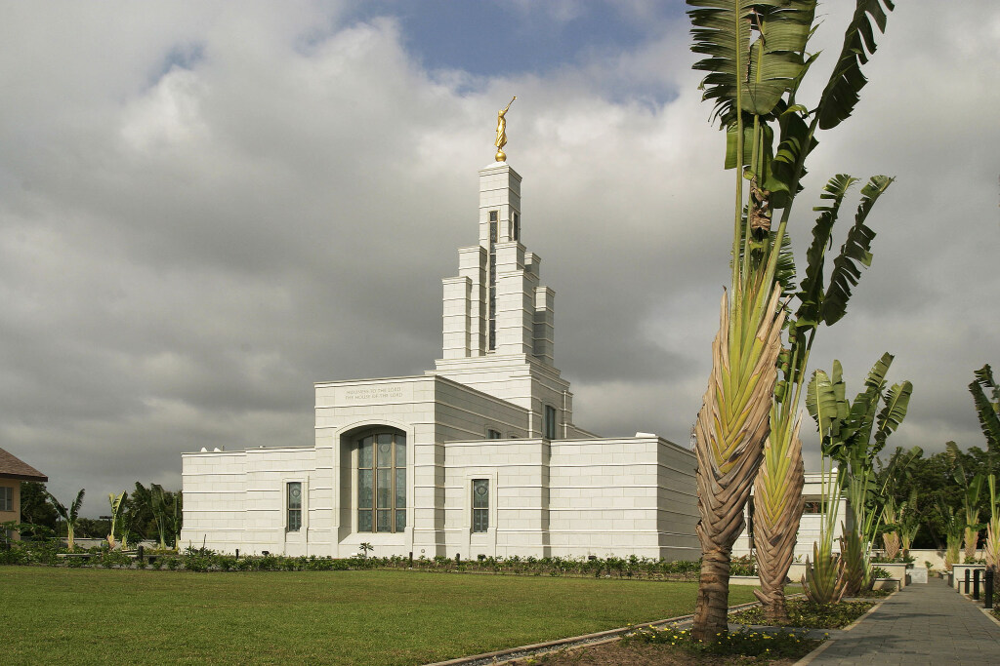

Temple Album
A collection of beautiful temples from around the world.
Salt Lake Temple
Washington D.C. Temple

Accra Ghana Temple
Aba Nigeria Temple
Rome Italy Temple
Paris France Temple
London England Temple
Nairobi Kenya Temple
Johannesburg South Africa Temple
No temples match this category.